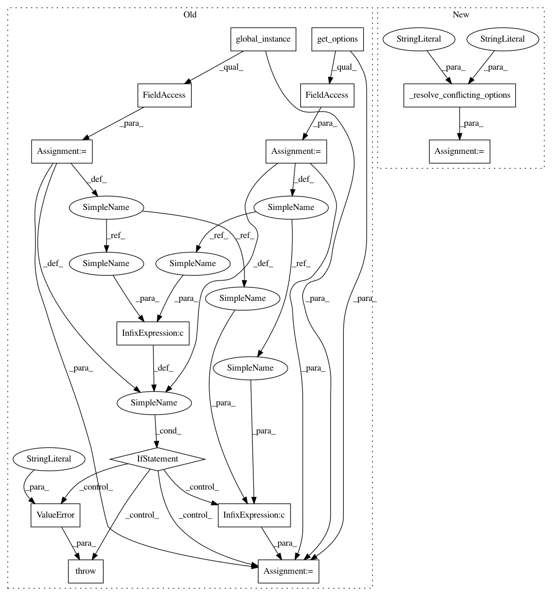

c8f0abdcf2263f9e71261e68c5f24dd97f272332,src/python/pants/backend/jvm/tasks/scalafix_task.py,ScalafixTask,invoke_tool,#ScalafixTask#Any#Any#,93
Before Change
args.append(f"--sourceroot={absolute_root}")
args.append(f"--classpath={os.pathsep.join(classpath)}")
task_config = self.get_options().configuration
subsystem_config = Scalafix.global_instance().get_options().config
if task_config and subsystem_config:
raise ValueError(
"Conflicting options for the config file used. You used the new, preferred "
"`--scalafix-config`, but also used the deprecated `--fmt-scalafix-configuration`.\n"
"Please use only one of these (preferably `--scalafix-config`)."
)
config = task_config or subsystem_config or None
if config:
args.append(f"--config={config}")
if self.get_options().rules:
After Change
args.append(f"--sourceroot={absolute_root}")
args.append(f"--classpath={os.pathsep.join(classpath)}")
config = self._resolve_conflicting_options(old_option="configuration", new_option="config")
if config:
args.append(f"--config={config}")
if self.get_options().rules:
In pattern: SUPERPATTERN
Frequency: 3
Non-data size: 14
Instances
Project Name: pantsbuild/pants
Commit Name: c8f0abdcf2263f9e71261e68c5f24dd97f272332
Time: 2020-01-06
Author: ericarellano@me.com
File Name: src/python/pants/backend/jvm/tasks/scalafix_task.py
Class Name: ScalafixTask
Method Name: invoke_tool
Project Name: pantsbuild/pants
Commit Name: c8f0abdcf2263f9e71261e68c5f24dd97f272332
Time: 2020-01-06
Author: ericarellano@me.com
File Name: src/python/pants/backend/jvm/tasks/scalafix_task.py
Class Name: ScalafixTask
Method Name: invoke_tool
Project Name: pantsbuild/pants
Commit Name: c8f0abdcf2263f9e71261e68c5f24dd97f272332
Time: 2020-01-06
Author: ericarellano@me.com
File Name: src/python/pants/backend/jvm/tasks/checkstyle.py
Class Name: Checkstyle
Method Name: checkstyle
Project Name: pantsbuild/pants
Commit Name: c8f0abdcf2263f9e71261e68c5f24dd97f272332
Time: 2020-01-06
Author: ericarellano@me.com
File Name: src/python/pants/backend/jvm/tasks/scalafmt_task.py
Class Name: ScalafmtTask
Method Name: invoke_tool